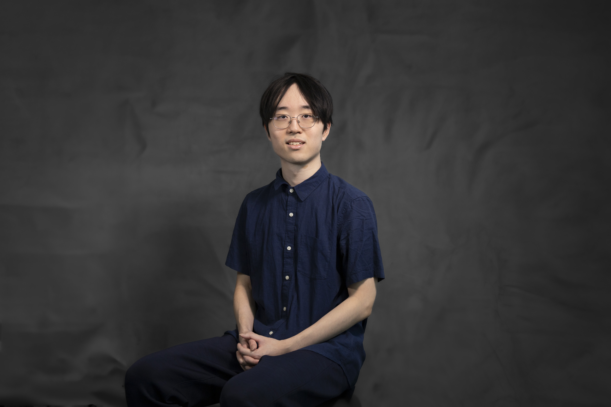

Brian Lee

Summary
- 4+ years of experience in John H. Daniels Faculty, specialized in design and digital/physical fabrication acrossarchitecture-related projects, which resulted in a $1250.00 scholarship from OAA.
- Achieved #4 placement as a team member in the internationally recognized Arch Hive Utopia 2023 case competition.
- Introduced new digital fabrication concepts in Grasshopper, such as attractor points, to 5th-year students in 1 hour as astudent instructor for office hours, effectively troubleshooting the problems they frustratingly face.
- Participated in the Faculty Orientation and Mentorship program for over four years, mentoring 10+ new students foreasier transition.
Skills
- Rhinoceros 7 proficiency ⭐⭐⭐⭐⭐
- Revit Proficiency ⭐
- Grasshopper proficiency ⭐⭐⭐⭐⭐
- V-ray proficiency ⭐⭐⭐⭐⭐
- Beginner programming experience
- Adobe software proficiency
- Photoshop ⭐⭐⭐⭐⭐
- Illustrator ⭐⭐⭐⭐⭐
- InDesign ⭐⭐⭐⭐⭐
- Premiere Pro ⭐⭐⭐⭐
- After Effects ⭐⭐⭐
- Lightroom ⭐⭐
- Generative AI proficiency
- ChatGPT ⭐⭐⭐⭐
- Midjourney ⭐⭐⭐⭐
- Digital fabrication proficiency
- Laser Cutter ⭐⭐⭐⭐
- Rhinocam3d/CNC machine ⭐⭐⭐⭐⭐
- Physical fabrication proficiency
- woodwork machines ⭐⭐⭐⭐⭐
- drill ⭐⭐⭐⭐⭐
- soldering iron ⭐⭐⭐
- pilers ⭐⭐⭐⭐⭐
- Sketching / Drawing ⭐⭐⭐⭐
- Languages
- English ⭐⭐⭐⭐⭐
- Korean ⭐⭐⭐⭐⭐
Professional Experience
Student Instructor
John H. Daniels Faculty (AALD) - Toronto, Ontario
09/2024 - 06/2025
- Generated ideas and refined 5 second year students’ work as a student instructor during an office hour aboutgrasshopper problems for an assignment to use digital fabrication to mimic organic clay sculptures, includingusing catenary component to create an arch shape or using attractor points to follow the irregular surfaces ofthe clay, increasing efficiency during script creation while minimizing errors.
- Advised second-year student to enlarge programming art and adjust roof design in Grasshopper file for aprogramming assignment on a Zoom call with other instructors, resolving the “How?” of mapping the art ontothe surface.
Student IT Office Help Desk
Yuri Lomakin - Toronto, ON
09/2023 - 03/2024
- Streamlined operations and minimized bottlenecks by replenishing printers and plotters' paper and ink cartridges,meeting the high printing demand of first- and second-year students, particularly during busy morning hours.
- Communicated with supervisor continuously and absorbed new skills quickly to adapt to printer operations andpaper/ink storage, resulting in streamlined maintenance and improved printer/plotter efficiency.
Student Manufacturing Technician
Webb Electronics - Vancouver, BC
07/2022 - 08/2022
- Coordinated with other students and senior technicians to assist in fabricating elevator products, includingsoldering lead and screwing the wires to make buttons, speaker/microphone systems, and other electricalcomponents, optimizing workflow efficiency by allocating more critical aspects of manufacturing to the seniortechnicians.
- Demonstrated rapid mastery of physical fabrication, including product testing (e.g., speaker and microphonetesting), executing high-quality and efficient tasks. This innovative approach started a streak of hiring student interntechnicians, significantly boosting production efficiency.
Co-curricular Experience
Case competition team member
Future Living Lab - Arch Hive Utopia 2023
06/2023 - 08/2023
- Conducted extensive research on various AI software to create images depicting a utopian building design froman existing urban space for the competition, leading the team to adapt to generative AI processes quickly.
- Experimented with AI software, including ChatGPT and Midjourney, to generate innovative designs and createnumerous images, where the chosen images ranked 4th place and received a prize of around $70 for the group.
Case competition team member
Future Living Lab - YAC Art Museum 2023
09/2023 - 11/2023
- Developed the base concepts for the art museum design in Weihai, Shandong, such as creating a zigzagpathway for the entrance and designing a looped circulation, which became critical in design.
- Rendered two images of the museum design using Rhino Vray: an axonometric view and a street-level view, bothused in the final submission.
Community Outreach
Student Mentor
University of Toronto John H. Daniels Faculty
10/2022 - 04/2025
- Advised mentee with software help such as Rhino 3D to construct 3D models, including CurveBoolean commandfor outlining drawings, which ended up cutting down approximately 12 hours from software difficulties.
- Mentored a first-year student on a pavilion roof design programming project, guiding component selection byintroducing the “shift list” component to fix data list management issues. This was graded as 95%.
Orientation Leader
University of Toronto John H. Daniels Faculty
09/2021 & 09/2022 & 09/2023
- Managed incoming first-year student group by introducing general university tips and connecting to availableresources, easing the transition to a new environment.
- Immediately reported to the coordinator a student who had forgotten his wallet at a nightclub and continuouslyfollowed up until the wallet was found at 1 a.m. downtown.
Education
- Honours Bachelor of Arts: Architectural Studies University of Toronto John H. Daniels Faculty | 09/2020 - 06/2025
- Technology Studio III - Constructed a 1:10 scale model with a partner for the final pavilion design designated toprovide a resting area in the Royal Botanical Garden, Hamilton. Received OAA's Exceptional Leadership ThroughDesign Excellence: Sustainability Scholarship Award of $1250.00.
- Technology Studio IV - Designed an interactive app using augmented reality as a group of three, where the guestcritique that studies AR requested for a copy for their further research and study.
- Advanced Topics in the Technology of Architecture - Made two presentations as a group of three that analyzedMasseria Rota, a vernacular building built in the 17th century in Naples, Italy, and CCTV headquarters, a modernbuilding in Beijing, China, by after extensive research, creating multiple analytical and critical points with diagramsregarding the buildings’ ventilation and climate, intended program, history, etc. which awarded the highest marksamongst all the groups. (81%)
- Technologies of Architecture, Landscape, Urbanism, and Art II - Wrote a 1000-word essay about inspecting andanalyzing Austrian Pavilion, in Dubai Expo 2020 and its usage of loam as a building material, and a 3000-wordresearch paper, about a new thesis criticizing Hyperloop’s potential to create a new perception of distance,space and time beyond the level of bullet trains, which got a very positive response, gaining grades of 90% and86%, respectively.
Awards
- OAA's Exceptional Leadership Through Design Excellence: Sustainability Scholarship Award - 2024
- Arch Hive Utopia 2023 Case Competition - 4th Place
Other